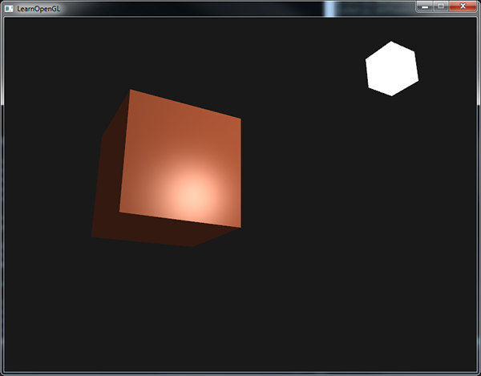

Materials
Source:
Materials
In the real world, each object reacts differently to light.
Steel objects are often shinier than a clay vase for example and a wooden container does not react the same to light as a steel container.
Each object also responds differently to specular highlights.
Some objects reflect the light without too much scattering resulting in a small highlights and others scatter a lot giving the highlight a larger radius.
If we want to simulate several types of objects in OpenGL we have to define
In the previous class we specified an object and light color to define the visual output of the object, combined with an ambient and specular intensity component.
When describing objects we can define a material color for each of the 3 lighting components: ambient, diffuse and specular lighting.
By specifying a color for each of the components we have fine-grained control over the color output of the object.
Now add a shininess component to those 3 colors and we have all the material properties we need:
#version 330 core
struct Material {
vec3 ambient;
vec3 diffuse;
vec3 specular;
float shininess;
};
uniform Material material; #version 330 core
struct Material {
vec3 ambient;
vec3 diffuse;
vec3 specular;
float shininess;
};
uniform Material material; In the fragment shader we create a struct to store the material properties of the object.
We can also store them as individual uniform values, but storing them as a struct keeps it more organized.
#version 330 core
struct Material {
vec3 ambient;
vec3 diffuse;
vec3 specular;
float shininess;
};
uniform Material material; We first define the layout of the struct and then simply declare a uniform variable with the newly created struct as its type.
#version 330 core
struct Material {
vec3 ambient;
vec3 diffuse;
vec3 specular;
float shininess;
};
uniform Material material; As you can see, we define a color vector for each of the Phong lighting's components.
The ambient material vector defines what color this object reflects under ambient lighting; this is usually the same as the object's color.
#version 330 core
struct Material {
vec3 ambient;
vec3 diffuse;
vec3 specular;
float shininess;
};
uniform Material material; The diffuse material vector defines the color of the object under diffuse lighting.
The diffuse color is (just like ambient lighting) set to the desired object's color.
#version 330 core
struct Material {
vec3 ambient;
vec3 diffuse;
vec3 specular;
float shininess;
};
uniform Material material; The specular material vector sets the color impact a specular light has on the object (or possibly even reflect an object-specific specular highlight color).
Lastly, the shininess impacts the scattering/radius of the specular highlight.
#version 330 core
struct Material {
vec3 ambient;
vec3 diffuse;
vec3 specular;
float shininess;
};
uniform Material material; With these 4 components that define an object's material we can simulate many real-world materials.
A table as found at devernay.free.fr shows several material properties that simulate real materials found in the outside world.
The following image shows the effect several of these real world materials have on our cube:

As you can see, by correctly specifying the material properties of an object it seems to change the perception we have of the object.
The effects are clearly noticeable, but for the most realistic results we will eventually need more complicated shapes than a cube.
Getting the right materials for an object is a difficult feat that mostly requires experimentation and a lot of experience so it's not that uncommon to completely destroy the visual quality of an object by a misplaced material.
Let's try implementing such a material system in the shaders.
Setting materials
We created a uniform material struct in the fragment shader so next we want to change the lighting calculations to comply with the new material properties.
Since all the material variables are stored in a struct we can access them from the material uniform:
void main()
{
// ambient
vec3 ambient = lightColor * material.ambient;
// diffuse
vec3 norm = normalize(Normal);
vec3 lightDir = normalize(lightPos - FragPos);
float diff = max(dot(norm, lightDir), 0.0);
vec3 diffuse = lightColor * (diff * material.diffuse);
// specular
vec3 viewDir = normalize(viewPos - FragPos);
vec3 reflectDir = reflect(-lightDir, norm);
float spec = pow(max(dot(viewDir, reflectDir), 0.0), material.shininess);
vec3 specular = lightColor * (spec * material.specular);
vec3 result = ambient + diffuse + specular;
FragColor = vec4(result, 1.0);
}void main()
{
// ambient
vec3 ambient = lightColor * material.ambient;
// diffuse
vec3 norm = normalize(Normal);
vec3 lightDir = normalize(lightPos - FragPos);
float diff = max(dot(norm, lightDir), 0.0);
vec3 diffuse = lightColor * (diff * material.diffuse);
// specular
vec3 viewDir = normalize(viewPos - FragPos);
vec3 reflectDir = reflect(-lightDir, norm);
float spec = pow(max(dot(viewDir, reflectDir), 0.0), material.shininess);
vec3 specular = lightColor * (spec * material.specular);
vec3 result = ambient + diffuse + specular;
FragColor = vec4(result, 1.0);
}
As you can see we now access all of the material struct's properties wherever we need them and this time calculate the resulting output color with the help of the material's colors.
Each of the object's material attributes are multiplied with their respective lighting components.
We can set the material of the object in the application by setting the appropriate uniforms.
A struct in GLSL however is not special in any regard when setting uniforms.
A struct only acts as an encapsulation of uniform variables so if we want to fill the struct we still have to set the individual uniforms, but this time prefixed with the struct's name:
lightingShader.setVec3("material.ambient", 1.0f, 0.5f, 0.31f);
lightingShader.setVec3("material.diffuse", 1.0f, 0.5f, 0.31f);
lightingShader.setVec3("material.specular", 0.5f, 0.5f, 0.5f);
lightingShader.setFloat("material.shininess", 32.0f);
We set the ambient and diffuse component to the color we'd like the object to have and set the specular component of the object to a medium-bright color; we don't want the specular component to be too strong on this specific object.
We also keep the shininess at 32.
We can now easily influence the object's material from the application.

It doesn't really look right though?
Light properties
The object is way too bright.
The reason for the object being too bright is that the ambient, diffuse and specular colors are reflected with full force from any light source.
Light sources also have different intensities for their ambient, diffuse and specular components respectively.
In the previous class we solved this by varying the ambient and specular intensities with a strength value.
We want to do something similar, but this time by specifying intensity vectors for each of the lighting components.
If we'd visualize lightColor as vec3(1.0) the code would look like this:
vec3 ambient = vec3(1.0) * material.ambient;
vec3 diffuse = vec3(1.0) * (diff * material.diffuse);
vec3 specular = vec3(1.0) * (spec * material.specular);
So each material property of the object is returned with full intensity for each of the light's components.
vec3 ambient = vec3(1.0) * material.ambient;
vec3 diffuse = vec3(1.0) * (diff * material.diffuse);
vec3 specular = vec3(1.0) * (spec * material.specular);
These vec3(1.0) values can be influenced individually as well for each light source and this is usually what we want.
Right now the ambient component of the object is fully influencing the color of the cube, but the ambient component shouldn't really have such a big impact on the final color so we can restrict the ambient color by setting the light's ambient intensity to a lower value:
vec3 ambient = vec3(0.1) * material.ambient; We can influence the diffuse and specular intensity of the light source in the same way.
This is closely similar to what we did in the previous previous class; you could say we already created some light properties to influence each lighting component individually.
We'll want to create something similar to the material struct for the light properties:
struct Light {
vec3 position;
vec3 ambient;
vec3 diffuse;
vec3 specular;
};
uniform Light light;
A light source has a different intensity for its ambient, diffuse and specular light.
The ambient light is usually set to a low intensity because we don't want the ambient color to be too dominant.
The diffuse component of a light source is usually set to the exact color we'd like a light to have; often a bright white color.
The specular component is usually kept at vec3(1.0) shining at full intensity.
Note that we also added the light's position vector to the struct.
Just like with the material uniform we need to update the fragment shader:
vec3 ambient = light.ambient * material.ambient;
vec3 diffuse = light.diffuse * (diff * material.diffuse);
vec3 specular = light.specular * (spec * material.specular);
We then want to set the light intensities in the application:
lightingShader.setVec3("light.ambient", 0.2f, 0.2f, 0.2f);
lightingShader.setVec3("light.diffuse", 0.5f, 0.5f, 0.5f); // darken the light a bit to fit the scene
lightingShader.setVec3("light.specular", 1.0f, 1.0f, 1.0f);
Now that we modulated how the light influences all the objects' materials we get a visual output that looks much like the output from the previous class.
This time however we got full control over the lighting and the material of the object:
Changing the visual aspects of objects is relatively easy right now.
Let's spice things up a bit!
Different light colors
So far we used light colors to only vary the intensity of their individual components by choosing colors that range from white to gray to black, not affecting the actual colors of the object (only its intensity).
Since we now have easy access to the light's properties we can change their colors over time to get some really interesting effects.
Since everything is already set up in the fragment shader, changing the light's colors is easy and immediately creates some funky effects:
As you can see, a different light color greatly influences the object's color output.
Since the light color directly influences what colors the object can reflect (as you might remember from the Colors class) it has a significant impact on the visual output.
We can easily change the light's colors over time by changing the light's ambient and diffuse colors via
glm::vec3 lightColor;
lightColor.x = sin(SDL_GetTicks() / 1000.0f * 2.0f);
lightColor.y = sin(SDL_GetTicks() / 1000.0f * 0.7f);
lightColor.z = sin(SDL_GetTicks() / 1000.0f * 1.3f);
glm::vec3 diffuseColor = lightColor * glm::vec3(0.5f); // decrease the influence
glm::vec3 ambientColor = diffuseColor * glm::vec3(0.2f); // low influence
lightingShader.setVec3("light.ambient", ambientColor);
lightingShader.setVec3("light.diffuse", diffuseColor);
Try and experiment with several lighting and material values and see how they affect the visual output.